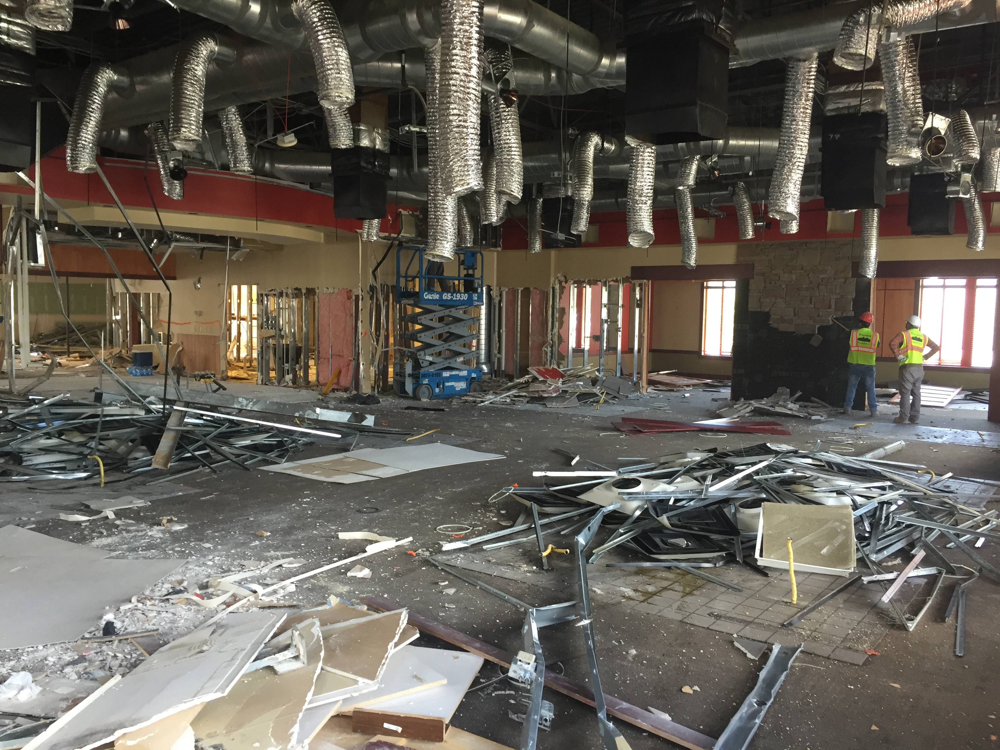

SERVICES
write info here
INTERIOR DEMOLTION
Red Rock Demolition has a specialized team
dedicated to interior demolition projects of all sizes — from small remodels to
large-scale commercial jobs. Whether you need service during the day, at
night, or over the weekend, our team is ready to meet your schedule and
project demands. We take pride in delivering safe, clean, and efficient
demolition services while ensuring every project is completed professionally
and prepared for the next phase of construction.
EXTERIOR DEMOLITION

Red Rock Demolition has a specialized team experienced in all types of
exterior demolition, including complete and partial structural demolition
projects. Our expertise includes building separation, shoring, site work, and
civil demolition services. We are committed to delivering safe, efficient, and
professionally managed projects while minimizing disruption and preparing
sites for the next phase of development.
SAW CUTTING AND REMOVAL

Red Rock Demolition has partnered with a specialized saw cutting team to handle
everything from intricate structural cutting projects to simple door and window
openings. Our experienced crews provide precise, safe, and efficient cutting and
removal services for residential, commercial, and industrial projects, ensuring
clean results and seamless preparation for the next phase of construction.
SPYDER CRANE
Red Rock Demolition provides professional Spyder Crane services for projects that require
precision lifting in tight or hard-to-access spaces. Our compact crane solutions are ideal for
interior construction, structural steel placement, glass installation, equipment removal,
demolition support, and specialized lifting operations where traditional cranes cannot reach.
With experienced operators and a commitment to safety, we deliver efficient lifting solutions
for residential, commercial, and industrial projects. Whether your project requires delicate
interior work or heavy material placement, Red Rock Demolition has the equipment and
expertise to get the job done safely and efficiently.
DRY ICE BLASTING
Red Rock Demolition offers professional dry ice blasting services for safe, efficient, and
environmentally friendly surface cleaning and preparation. Dry ice blasting is a non-abrasive
cleaning method that removes dirt, coatings, adhesives, grease, smoke damage, and
contaminants without damaging the underlying surface.
Our specialized team uses advanced equipment to clean industrial facilities, commercial
buildings, machinery, concrete, wood, and sensitive equipment with minimal downtime and no
secondary waste. Dry ice blasting is ideal for restoration projects, surface preparation, fire
damage cleanup, and industrial maintenance where precision and cleanliness matter most.
At Red Rock Demolition, we are committed to providing safe, effective, and reliable solutions
tailored to your project needs.
DXR & BROKK ROBOTIC DEMOLITION
Red Rock Demolition provides advanced DXR and Brokk robotic demolition services for
specialized concrete and metal removal projects. Using remote-controlled demolition
equipment, our team can safely and efficiently perform precision demolition in confined spaces,
hazardous environments, and structurally sensitive areas where traditional equipment is limited.
Our robotic demolition services are ideal for concrete removal, structural modifications, metal
dismantling, industrial demolition, plant shutdowns, and selective demolition projects. With
increased safety, reduced vibration, and improved precision, DXR and Brokk equipment allow
us to complete challenging projects faster and more efficiently while minimizing disruption to
surrounding structures.
From heavy industrial facilities to commercial renovations, Red Rock Demolition delivers
innovative demolition solutions backed by experienced operators and a commitment to safety,
quality, and performance.
TRASH ROCKET CHUTE RENTAL
Red Rock Demolition offers convenient and efficient Trash Rocket rental services for fast
debris removal on construction, demolition, renovation, and cleanup projects. Our Trash Rocket
systems provide a safe and controlled solution for moving debris from elevated floors directly
into designated containers, helping keep your job site clean, organized, and productive.
Ideal for commercial construction, interior demolition, roofing, and renovation projects, Trash
Rocket rentals help reduce labor, improve safety, and increase job site efficiency. Our team
provides professional setup, support, and reliable service to keep your project running smoothly
from start to finish.
Whether you need debris removal for a small remodel or a large-scale construction project, Red
Rock Demolition has the equipment and experience to support your job site needs.
CONCRETE GRINDING & CONCRETE SHAVING
Red Rock Demolition provides professional concrete grinding and concrete shaving services for
commercial, industrial, and residential projects. Our specialized equipment and experienced
operators can smooth uneven surfaces, remove trip hazards, eliminate coatings and adhesives,
and prepare concrete for new flooring or finishing applications.
Whether your project requires precision surface leveling, floor preparation, high spot removal,
or concrete correction, our team delivers clean, efficient, and dust-controlled solutions tailored
to your needs. We are committed to providing safe, high-quality workmanship while
minimizing downtime and disruption to your project site.
From small surface repairs to large-scale floor preparation, Red Rock Demolition has the
expertise and equipment to handle your concrete grinding and shaving needs with precision and
professionalism.